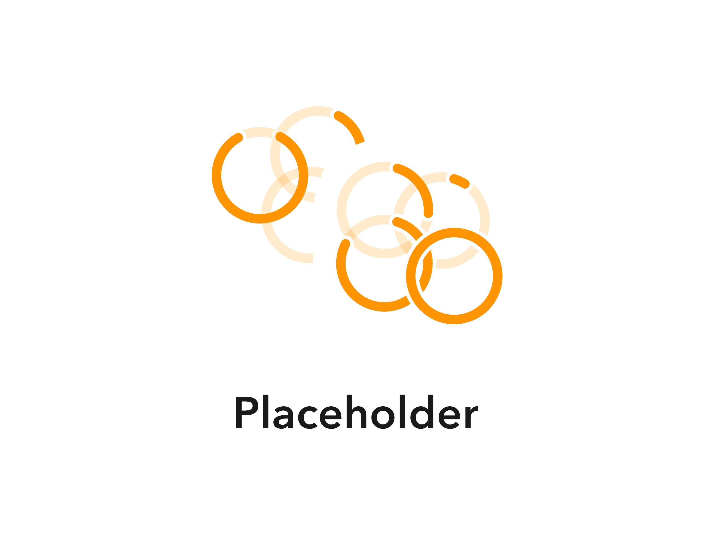

Product Design
What is Kernel
Early 2019, Kernel started as an idea to track the amount of days till a movie released in theaters. In July 2020 I became co-owner and scrapped everything we had in favor of building a better app from the ground up. Kernel becomes the central aspect of (socially) engaging with films and series.
What I did in this project
I was the only designer on this project and orchestrated the course of development as coowner with Nikias Molina, the founder of Kernel.
Index
- People need a complete watch history
- Theatrical releases limit the experience
- The neglected title screen
- Adding multiple titles is discouraging
- conclusion
People need a complete watch history
Kernel’s original list of tracked items were only theatrical released and were removed once they released. Leaving users clueless about wether they added it and naturally wether the title already released or not.
Collections will elevate Kernel to a new level
Breaking the mold of a single list to track upcoming films will eliminate the lack of clarity. This transparency will increase engagement, retention and overall time spent in the app.
Competitors aren’t doing it (well)
I looked at competitors to see their user flows and pin point why this feature is not at its full potential yet.
Kernel only needs 1 button
This can be done. By giving users the ability to create custom collections of titles alongside a “want” and “seen” collection, letting users move titles out of a collection and into another on their own terms.
Everything was a collection already
Titles one wants to see form a collection, Titles one has seen also form a collection together, likewise for any culmination thinkable. Hence Kernel will be moving forward with a prominent “add” button and icon to embody this idea.
Theather limits the experience
Kernel originally only focused on theatrical releases however after those would release they disappeared from a list immediately. Global lockdowns made theatrical info useless and amplified the average viewers’ affection for series more than before.
Remove to add
By shifting focus from theatrical releases for movies, and adding series, Kernel will appeal to more people. Additionally, a subtext which inherits the release date data to permanently go below the name of a title will show users only the information they need with a subliminal call to action.
Repeat to confirm
Only a minimal amount of users were interested in owning a digital or physical copy and would only track this information in limited situations. But the data showed there was more potential for the adaptive subtext.
Tracking series can be done in multiple apps. No two reports from my group of testers who used competitive apps were the same.
Season 1, episode 3: subtext hierarchy
I included different categories from the previous research as categories for the subtext. These categories will be intuitively switched between following a hierarchy E.G. you can only rate a movie when you’ve seen it therefore availability is less relevant than seeing your existing rating.
The majority of flaws in existing series tracking apps were already solved in the movie page, so series in Kernel were built on that.
From the amount of days left to your personal rating
Series will be integrated using the same formula we developed for movies. And thus eliminate the need to use a different app with a learning curve for essentially the same functions. The adaptive subtext will be implemented and visible for all types of titles.
The neglected title screen
Kernel’s current form and any other film or series related app suffer from a crowded space on the title screen. This causes users to be discouraged to come back, look for more information the next time or lose track of what title the information was about in the first place as they keep scrolling.
A visit that’s welcomed
A static page without horizontal scroll and the bare minimum of content will guide users where they are and can go. Providing this clear overview will improve retention rates by encouraging users to return for their next query.
Too much, too many, too long, too far, too small
This was an early, informal research and mostly included my personal insights. I later surveyed my test groups on these findings. Every element on these title pages is screaming for a user’s attention and get lost in the collective noise of the main title screens.
True to the intentions
Movie posters are designed to convey/recognize a film or series already, so they go front and center. A moving background blur could make the entire screen feel as if the app is part of the films and series. Grouped buttons with clear visual hierarchy should give clarity to the the rest of the screen.
All for one
The large poster and matching background perfectly fit the philosophy of Kernel. Providing 5 lines of description by default fits most synopsis and can simply be expanded and closed. The actions unique to Kernel are prominently displayed underneath the synopsis. Buttons on the bottom of the screen neatly tuck away all information like episodes and seasons (only for series), complete cast & crew, and all trailers, teasers and behind the scenes that are publicly available in an uncompromising manner.
Adding multiple titles is discouraging
To keep users coming back they need to do more than a one time task. They might want to add every title they already kept track of, or know they’ve seen. But looking up every title one by one is a painstaking process. Much like adding contacts to a new phone or deleting social media posts.
Make doing as easy as saying
Providing users with a way to search for titles inside of a collection and quickly add them by nothing more than tapping a “+” button will increase the amount of movies people add. Image recognition will make it easier for users to add titles from real life scenarios.
Needing an unnecessary break
One of the studies I performed on adding titles to “lists” in competing apps mostly ended in fatigue. In very few cases users actually felt satisfied with the results of the task they were set out to do.
Contributing to the future
Based on the test results a “quick add” feature would be accessed in a way similar to the mockups below.
Let’s see what this is
When entering the “quick add” interface, users are likely to desire more control and add titles from the top of their head. The A.I. camera will be accessible from within quick add and the main search tab. So users can point their device at posters or covers and access what they want without having to do any work.
Empathy creates the bricks, perseverance is the cement.
What stuck to me the most is that there are no solutions. But only if you stop looking. Everything can be done, no exceptions. Understanding the user and truly being able to imagine oneself in the user’s situation is the easiest way of getting started and getting a sense of direction for the product. Preventing lot of potentially wasted time. Even more crucial than bricks and cement is a blueprint. The blueprint means breaking everything down to the core as if it were a building or a story. There’s an entrance, exit, and every room serves a purpose. If those blanks are filled in and make sense there’s a chance it’s a solid app.